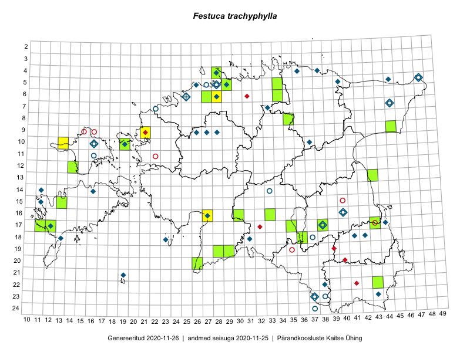

Festuca trachyphylla
Uuendatud: 2016-12-08
Kaardile koondatud taksonid: Festuca trachyphylla (Hackel) Krajina

Kaart põhineb 11 kirjel, neist vaatlusi 9 ja eksemplare 2. Taksonit on leitud 8 ruudust.
| Ruut | Vaatleja(d) | Vaatlusaeg | Kirje tüüp | Viide andmebaasikirjele |
|---|---|---|---|---|
| 10-13 | Thea Kull | 2015-06-14 | ruut/ala | vaata PlutoFis |
| 06-34 | Kai Rünk, Ülle Jõgar, Illi Tarmu | 2015-05-22T07:00Z | ruut/ala | vaata PlutoFis |
| 06-34 | Kai Rünk, Ülle Jõgar, Illi Tarmu | 2015-05-22T07:00Z | punkt | vaata PlutoFis |
| 06-27 | Tõnu Ploompuu | 2015-08-11 | ruut/ala | vaata PlutoFis |
| 09-21 | Kadi-Liis Kesler, Tõnu Ploompuu | 2015-07-14 | ruut/ala | vaata PlutoFis |
| 08-35 | Jana-Maria Habicht, Ester Valdvee, Kirke Pilvik | 2015-07-14 | ruut/ala | vaata PlutoFis |
| 04-28 | Sander Laherand, Tõnu Ploompuu, Nele Jõessar | 2016-07-25 | punkt | vaata PlutoFis |
| 04-28 | Sander Laherand, Tõnu Ploompuu, Nele Jõessar | 2016-07-25 | ruut/ala | vaata PlutoFis |
| 16-27 | Tiit Hallikma, Tõnu Ploompuu | 2016-06-20 | ruut/ala | vaata PlutoFis |
| 17-38 | Peedu Saar, Thea Kull | 2015-06-17 | eksemplar | vaata PlutoFis |
| 08-35 | Jana-Maria Habicht | 2015-07-14 | eksemplar | vaata PlutoFis |